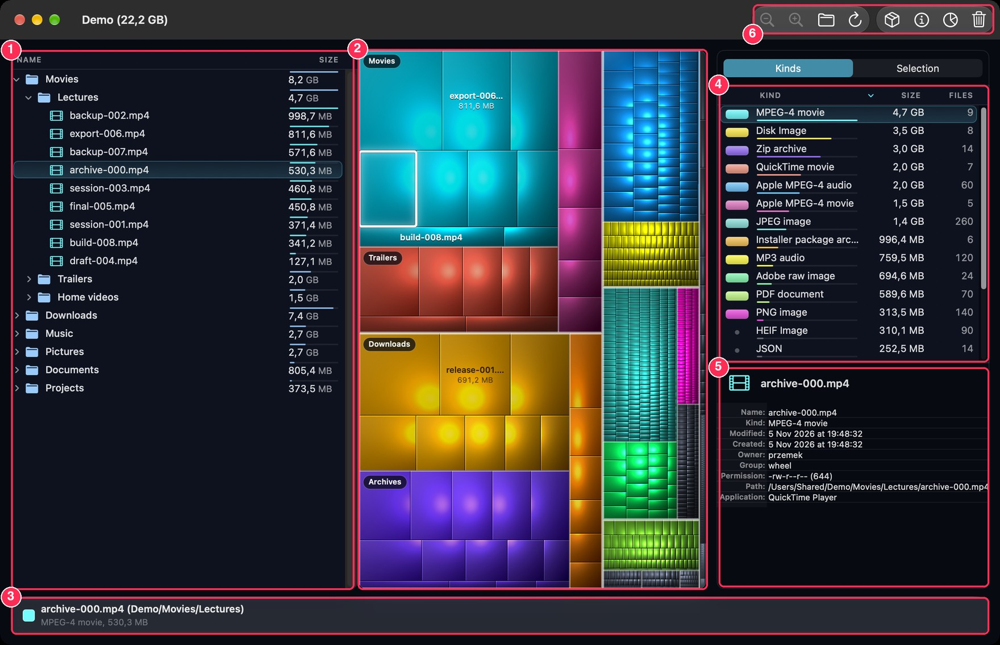

Choose File ▸ Open Folder… and pick any folder or volume you would like to analyze (the volumes panel at launch lists your disks as well). A progress window shows while the folder is scanned; a large folder or a whole volume takes a while. When the scan is done the main window opens:

Click a kind in the kinds list and every other kind goes dark and loses its names, so only the files of that kind shine: where are all my disk images, my videos, my archives? A pill at the upper right of the map names the kind and its total size; click its × to leave the focus. While a kind is focused the list keeps showing it, even if you select other items meanwhile.
The sidebar and the information card can be hidden to give the map more room: use the toolbar buttons or the Window menu (File Kind Statistics, Selection List, Information). The window remembers whether the sidebar was shown and which tab was on top.
In the View menu you choose whether package contents (applications and other bundles) are shown as folders, whether free and other space are drawn on the map, whether physical instead of logical file sizes count, you zoom into folders and out of them, and you choose whether the tree sits beside the map or above it (Split Horizontally / Split Vertically).
Disk Inventory Xs has 12 predefined colors. They are assigned to the 12 “largest kinds” of the first folder you open (the idea behind this is that it gets harder and harder to tell colors apart when there are more than 12). The palette is chosen to stay distinguishable for people with the usual kinds of color blindness.
The remaining kinds share a dim grey and show a dim dot instead of a chip in the kinds list. You cannot tell them apart by color, but the tree, the names on the map and the Selection tab say what they are.
The color assignment is made across all opened folders: files of the same kind have the same color in all opened folders. So if the first folder uses all 12 colors and you open a second one with totally different kinds, there are no colors left and its kinds are grey. The only way to reset the assignment is to quit and start Disk Inventory Xs again.
Disk Inventory Xs always uses a dark appearance. It follows the display settings in System Settings ▸ Accessibility ▸ Display: with Reduce Transparency the glass panels become solid, with Increase Contrast outlines turn white and borders firmer, and with Reduce Motion the sidebar no longer slides.